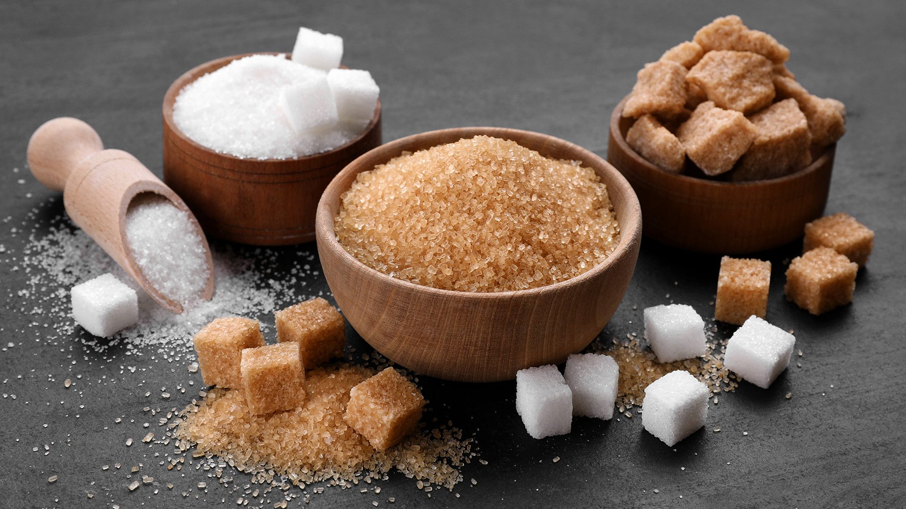
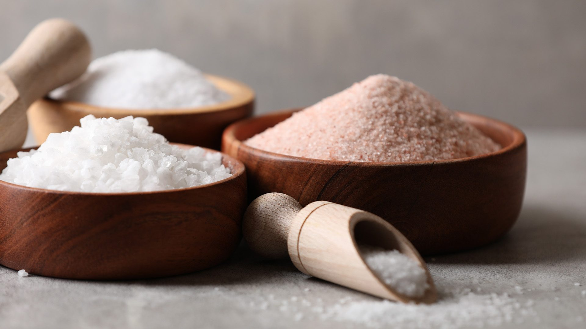

A short theory of fat, sugar, and salt
Before modifying a recipe, it helps to understand what fat, sugar and salt contribute to food. Their roles extend well beyond nutrition, and changing the amount or type used can have unexpected effects on the finished dish.
Fat contributes to flavour, richness, texture and mouthfeel. It can create creaminess, carry fat-soluble flavours and help produce desirable textures in both savoury and sweet foods.
In baking and pastry, fat can also contribute to tenderness and structure. The type of fat matters too. Butter, cream, oils and other fats do not behave identically when heated or incorporated into a recipe.
When reducing or replacing fat, the challenge is therefore not simply to remove a source of energy. You need to consider what the fat is contributing to the recipe and whether another ingredient or technique can provide some of the same functions.

Sugar is best known for providing sweetness, but its culinary functions extend much further.
In baked goods, sugar contributes to browning, tenderness, moisture, structure and aeration. It also affects the way ingredients behave during cooking and can influence the texture of the finished product.
Reducing sugar can therefore produce a result that is less sweet, but it may also be less tender, less moist or less deeply coloured. Replacing sugar with another sweetener does not necessarily reproduce all its culinary functions.
This means that modifying sugar requires consideration of both sweetness and function.

Salt is a powerful flavour modifier. It can enhance desirable flavours, balance sweetness and bitterness, and influence the overall perception of a dish.
Reducing salt can therefore make food seem bland even when other ingredients remain unchanged. However, the perception of saltiness is influenced by more than the total amount of sodium. Where and when salt is added, its physical form and the other flavours present in the dish can all make a difference.
When modifying salt, the goal is not simply to make food taste less salty. It is to maintain flavour and enjoyment while achieving the desired nutrition outcome.
Modification is more than substitution
The examples above demonstrate why recipe modification is rarely as simple as replacing one ingredient with another. A successful modification considers the function of the original ingredient, the properties of the replacement and any changes that may be needed to the recipe method.
This is where culinary experimentation becomes important. Small changes can produce surprisingly different results, and this is why testing and sensory evaluation are an essential part of developing modified recipes.